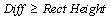
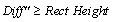
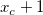

様々な検索手法を使用してピークを検出します
この機能は8.0 SR5.で更新されています。詳細は、リリースノートを参照してください。
pkfind method:=first; // pick peaks by using the first derivative method.
スクリプトからXファンクションにアクセスする場合、追加のオプションスイッチについてのページを参照してください。
| 表示 名 |
変数 名 |
I/O と データ型 |
デフォルト 値 |
説明 |
|---|---|---|---|---|
| 入力 | iy |
入力 XYRange |
|
入力データを指定します。 |
| スムージングポイント数 | smooth |
入力 int |
|
Savitzky-Golayスムージングは、ピーク検出前にスペクトルデータに実行することができます。スムージングを実行する場合、この変数を使ってSavitzky-Golayスムージングの移動ウィンドウでのポイント数(正の整数)を入力します。スムージングを実行したくない場合、この変数を0にセットします。 |
| 方向 | dir |
入力 int |
|
ピークの方向を指定します。
オプションリスト：
|
| 手法 | method |
入力 int |
|
ピークを検索するのに使用する手法を指定します。
オプションリスト：
|
| 局所ポイント数 | npts |
入力 int |
|
これは、手法の変数が0 (max)の場合のみ利用できます。局所的な領域でのポイント数を指定します。これは局所最大法でピークを検索するのみ使用します。 |
| サイズオプション | option |
入力 int |
|
これは、手法の変数が1 (win)の場合のみ利用できます。これは、高さと幅の変数(下記)がどのように解釈するかを指定します。
オプションリスト：
|
| 高さ | height |
入力 double |
|
これは、手法の変数が1 (win)の場合のみ利用できます。これは矩形の高さを指定します。これはピークを検索するのに使用されます。 |
| 幅 | width |
入力 double |
|
これは、手法の変数が1 (win)の場合のみ利用できます。これは矩形の幅を指定します。これはピークを検索するのに使用されます。 |
| ピークのフィルタリング | filter |
入力 int |
|
見つけるピークの数またはピークの高さに制限をつけるかどうかを指定します。
オプションリスト：
|
| 値 | しきい値高さ / ピークの数 / しきい値高さ(%) |
入力 double |
|
この変数は、上の filter 変数と一緒に動作します。見つかったピークの最小高さ、または見つかったピークの最大数、または見つかったピークの高さパーセントを指定します。 |
| 最大半幅 | hwidth |
入力 double |
|
ピークマーカを探す最大の範囲を指定します。 |
| ピーク裾の高さ | fheight |
入力 double |
|
ピークマーカを探す高さのしきい値を指定します。 |
| ピーク中央のインデックス | ocenter |
出力 ベクター |
|
デフォルトでピーク中心のインデックスを出力します。ピーク中心のインデックスを出力する場所を指定します。 |
| 左マーカのインデックス | oleft |
出力 ベクター |
|
左ピークマーカのインデックスを出力するかどうかを指定します。 |
| 右マーカのインデックス | oright |
出力 ベクター |
|
右ピークマーカのインデックスを出力するかどうかを指定します。 |
| ピークの中心のX値 | ocenter_x |
出力 ベクター |
|
ピークの中心のX値を出力するかどうかを指定します。 |
| ピークの中心のY値 | ocenter_y |
出力 ベクター |
|
ピークの中心のY値を出力するかどうかを指定します。 |
| 左マーカーのX値 | oleft_x |
出力 ベクター |
|
左マーカーのX値を出力するかどうかを指定します。 |
| 左マーカーのY値 | oleft_y |
出力 ベクター |
|
左マーカーのY値を出力するかどうかを指定します。 |
| 右マーカーのX値 | oright_x |
出力 ベクター |
|
右マーカーのX値を出力するかどうかを指定します。 |
| 右マーカーのY値 | oright_y |
出力 ベクター |
|
右マーカーのY値を出力するかどうかを指定します。 |
このXファンクションは、さまざまな方法でピーク(ピークの中心とピークマーカ)を見つけ、ピーク中心のインデックスを出力するのに使用できます。
/* このサンプルでは、スペクトルデータのピークを決定する方法を示します。 \Samples\Spectroscopy フォルダのサンプルデータを使用します。 1.Originのブックにサンプルデータをインポート 2.Xファンクションpkfindでピークを検索 3.元のデータと見つかったピークをプロット */ //7つのピークがあるスペクトルデータをインポート string fname$=system.path.program$ + "Samples\Spectroscopy\HiddenPeaks.dat"; newbook sheet:=0; newsheet cols:=5 labels:="Time|Spectrum Data|Peak Center Indices|Peak Center X|Peak Center Y"; impASC; string bkn$=%H; //ピーク中心を検索 pkFind iy:=col(2) method:=second ocenter:=col(3) oleft:=<none> oright:=<none> ; //ピーク中心をインデックスで検索 col(4)=col(1)[col(3)]; //X位置 col(5)=col(2)[col(3)]; //Y位置 //黒線でスペクトルデータをプロット plotxy iy:=col(2) plot:=200; //ピーク中心を赤の散布図でプロット plotxy iy:=[bkn$]1!(4,5) plot:=201 legend:=1 color:=2 ogl:=1!;
このXファンクションは、5つの手法でピークを探します。普通のピークは、局所最大、ウィンドウサーチ、1次微分の手法で簡単に見つけることができます。データに隠れたピークが含まれる場合、別の手法、2次微分や1次微分後の残差を使います。
ピーク検出は、極値(極大値や極小値)に基づいて行われます。手順は以下の通りです。
このXファンクションは、移動矩形を使ってピークを検出します。この矩形はX軸に平行な2つの辺とY軸に平行な別の2つの辺を持ちます。次の4つのステップを実行し、正のピークが存在するかどうかを見つけます。
1. 矩形の左下のx座標をx1、右下のx座標をx2とします。入力曲線上にx値がx1であるようなポイントP1 (x1, y1) を見つけ、 また、入力曲線上にx値がx2であるような別のポイント P2 (x2, y2) を見つけます。
2. y1 と y2 を比較して、2つのyのうちより大きい方を y'として取ります。
3. P1とP2の間の曲線の最大値yである曲線の局所最大値(yLocalMax)が見つかります。そして、局所最大値と y' の差を以下のように計算します。
4. Diffを矩形の高さと比較します。の場合、局所最大値のポイントが正のピークだと見なされ、それ以外の場合、この矩形の中に正のピークは検出されません。
負のピークを見つける手順も同様です。
1. 矩形の左下のx座標をx1、右下のx座標をx2とします。入力曲線上にx値がx1であるようなポイントQ1 (x1, y1) を見つけ、 また、入力曲線上にx値がx2であるような別のポイント Q2 (x2, y2) を見つけます。
2. y1 と y2 を比較して、2つのyのうちより小さい方を y'として取ります。
3. Q1とQ2の間の曲線の最小値yである曲線の局所最小値(yLocalMin)が見つかります。そして、局所最小値と y' の差を以下のように計算します。
4. Diff"を矩形の高さと比較します。の場合、局所最小値のポイントが負のピークだと見なされ、それ以外の場合、この矩形の中に負のピークは検出されません。
これらのステップが終了したら、矩形が1ポイント右に動き、矩形がデータ範囲外に出るまで、これらのステップを繰り返し実行します。
基本的な考え方は以下の通りです。1) 正のピークの中心が にあるとき、 での一階微分は正になりますが、 での一階微分は負になります。2) 負のピークの中心が にあるとき、 -1 での一階微分は負になりますが、 +1 での一階微分は正になります。
データの滑らかな2階微分は、元データの極値を検出でき、これは通常のピークと隠れピークの両方のピーク位置に対応します。
図ではスペクトルデータは2つの局所最大ピークと1つの隠れたピークで構成されています。その2階微分曲線が下側に表示され、極小値により、この中に隠れたピークがあることがわかります。
基本的な考え方は以下の通りです。
1.一階微分法を使ってピークを検出し、個々にピークをフィットします。 そして、各ピークのフィット曲線を累積します。
2.スペクトルデータと累積フィットデータ間の残差を計算します。
3.それぞれ対応するデータポイントの残差は隠れたピークとして考えられるしきい値より大きくなります。
以下は、隠れたピークを見つける一階微分法の例です。このスペクトルデータには2つの正のピークと1つの隠れたピークがあります。2つの正のピークのフィット曲線の累積データがスペクトルデータから減算されると、隠れたピークが残差プロット内にはっきりと現れます。
blauto, fitpeaks, pa, PaMultiY, NLfitpeaks
キーワードスペクトル、二次微分、局所最大、ウィンドウ、しきい値